1단계 - 모음
글자를 읽는 가장 기본이 되는 모음의 소리와 모양을 익혀요. 입 모양과 소리를 연결하고, 비슷하게 들리는 모음을 구별하며 정확하게 읽는 연습을 해요.
- 기본 모음 소리 익히기
- 모음 모양 구별하기
- 소리와 글자 연결하기
- 비슷한 모음 구별하기
- 입 모양을 보고 소리 내기
- 모음을 듣고 찾아보기
- 모음을 정확하게 읽기
- 모음 순서대로 배열하기
우리 아이가 어려워하는 읽기를 찾아봐요
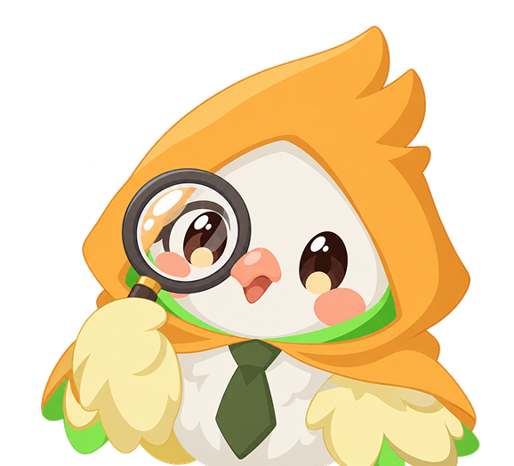
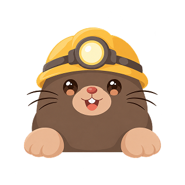
『읽기 자신감』과 난독증 아동의 읽기 특성을 다룬
다양한 연구 자료를 바탕으로,
아이들이 읽기 과정에서 겪는 어려움을 세심하게 살피고
필요한 훈련 요소를 단계별로 나누었어요.
기초 읽기부터 문장 이해까지 차근차근 익힐 수 있도록
읽:꼬만의 세분화된 단계별 훈련법을 만들었어요.
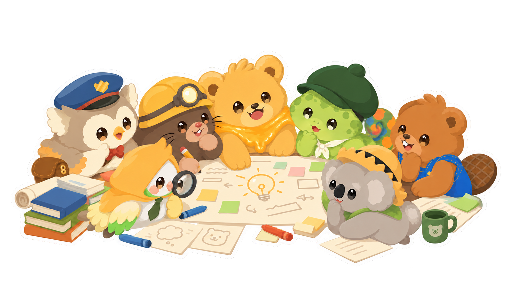
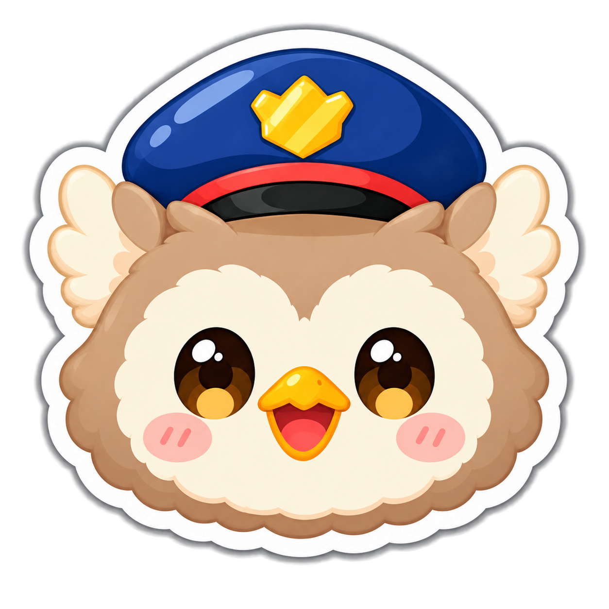
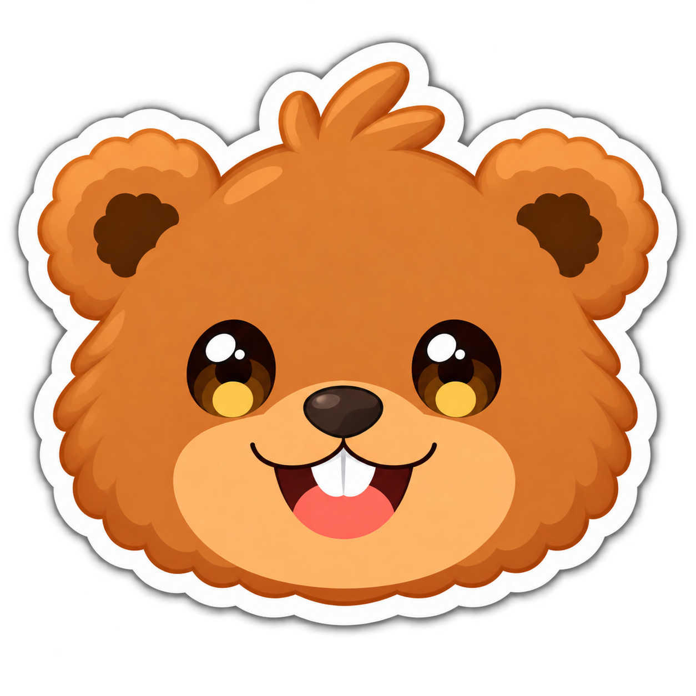
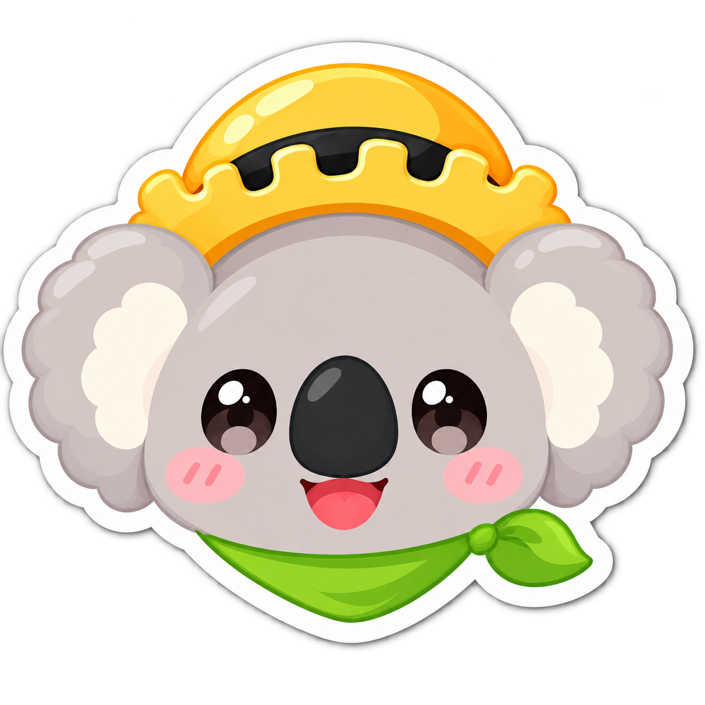
읽:꼬는 글자를 외우고 반복하는 일반 한글 학습과는 달라요.
난독증 아동의 읽기 특성을 바탕으로,
필요한 읽기 능력을 단계별로 세분화해 훈련해요.
글을 읽기 어려운 난독증 아동
8-10세한글 학습을 시작하는 일반 아동
5-7세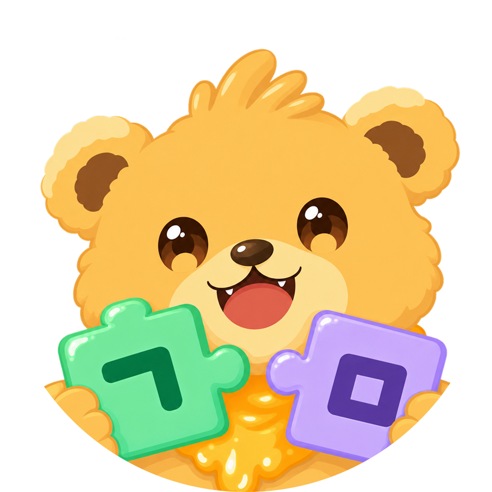
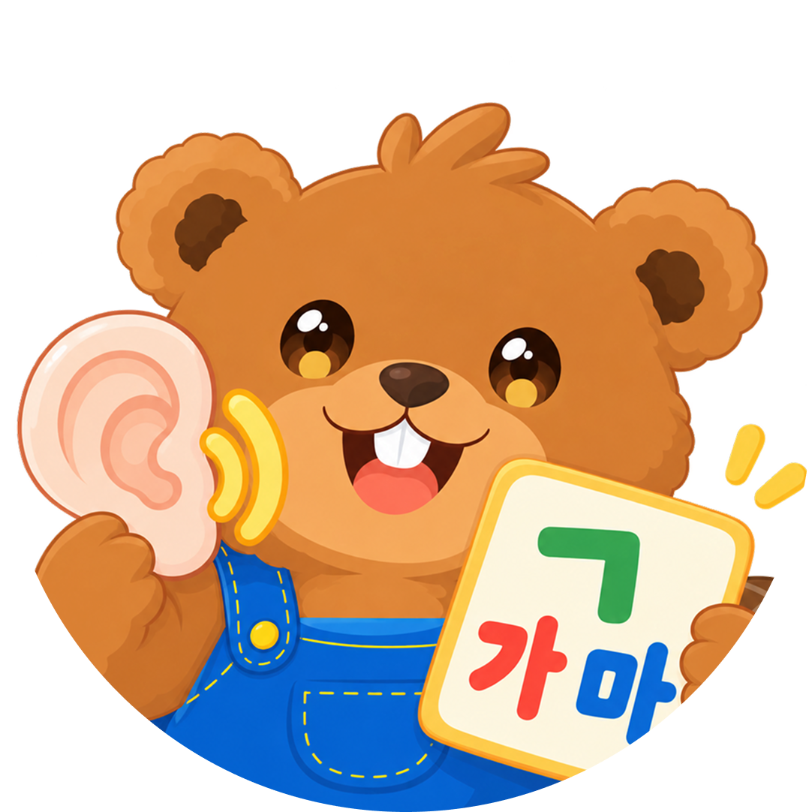
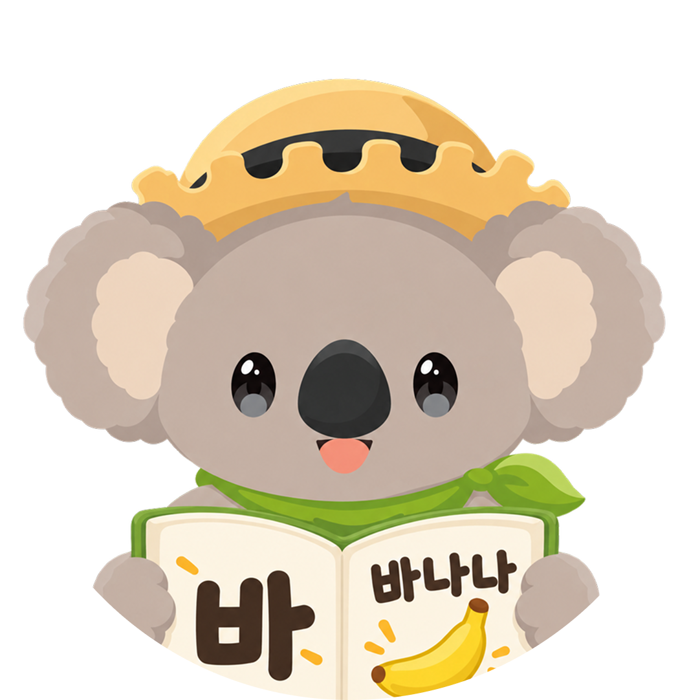
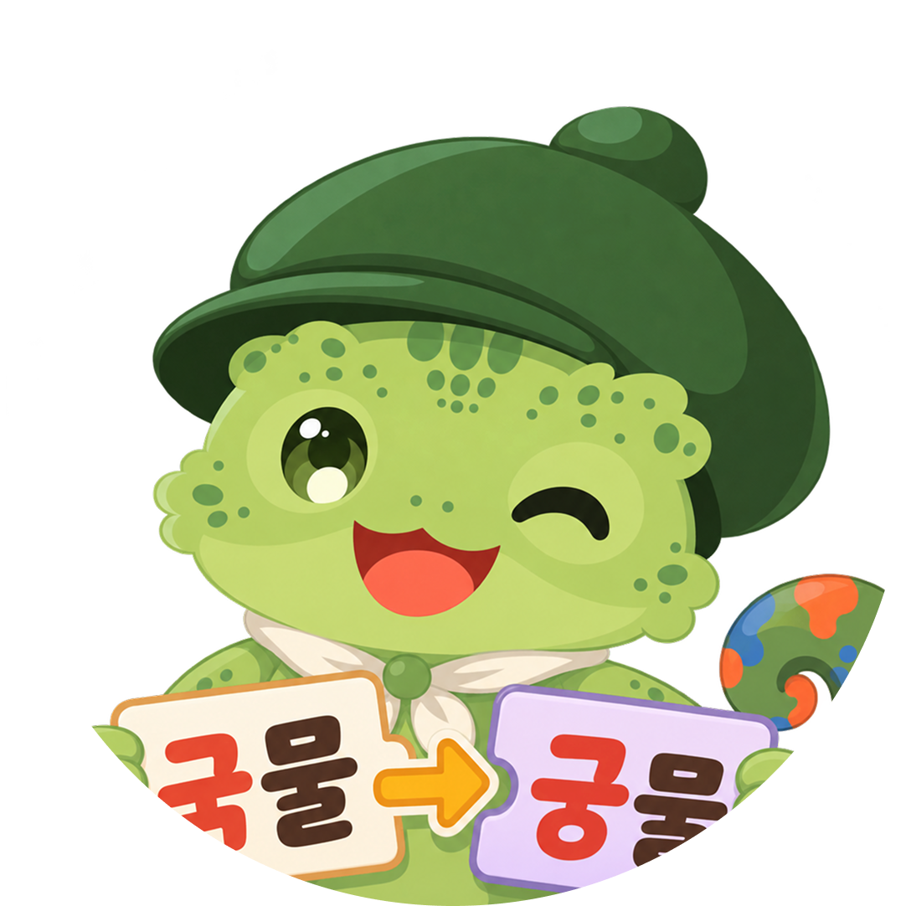
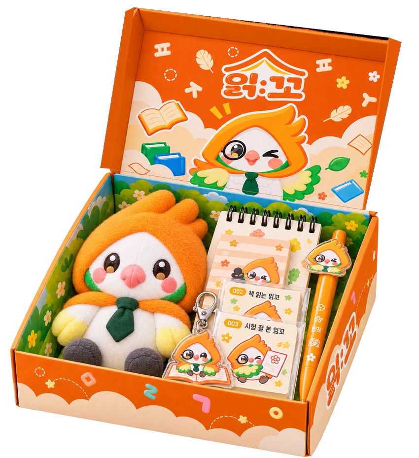
오늘도 작은 변화를 지켜보며, 그 속에서 또 하나의 이야기를 만들어갑니다.
양 끝 두 카드는 시연용으로 작성한 예시입니다.
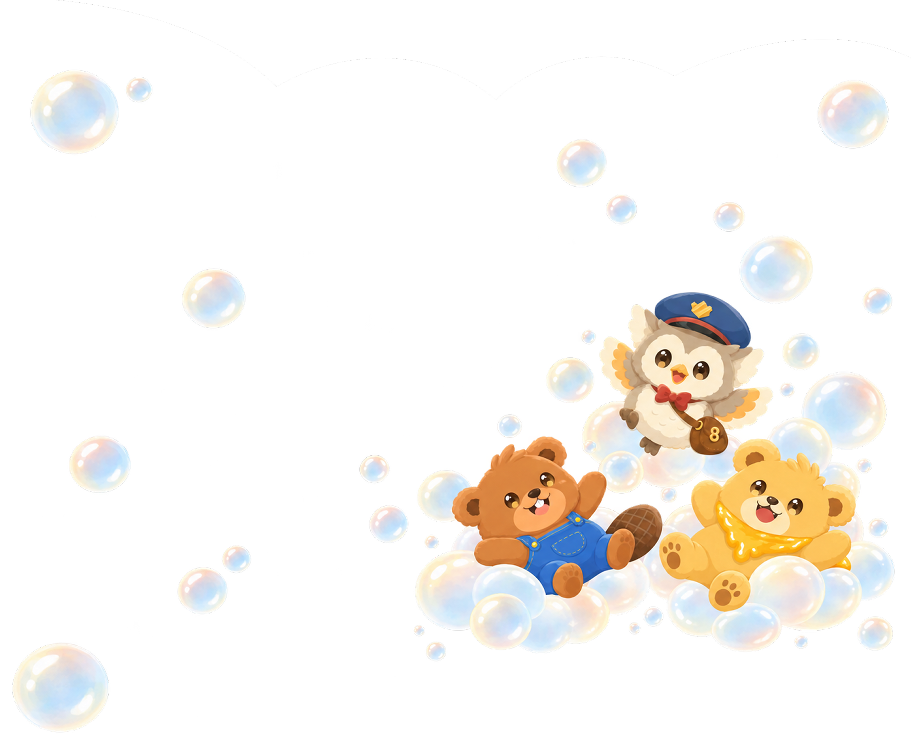
난독증 훈련을 재밌고 건강하게,